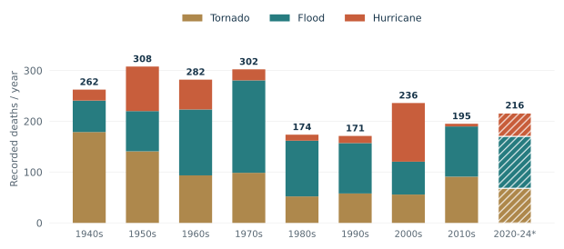
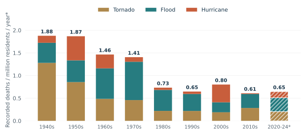
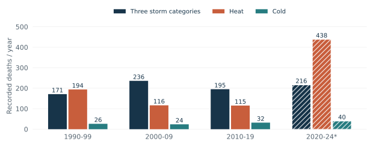
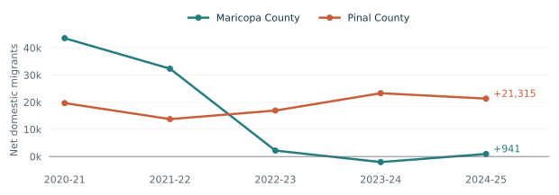

A bigger population can turn a small risk into many deaths. That was my first reaction to this assignment. But counting people is only a start: the risk also depends on where they live and what protection they can actually use. The U.S. weather record shows progress, alongside important limits to what that progress tells us.
A larger population, fewer recorded storm deaths per person
Across the NWS tornado, flood, and hurricane categories, annual average fatalities fell from 262.3 in 1940-49 to 195.1 in 2010-19. Over the same periods, the population-scaled indicator fell from 1.88 to 0.61 deaths per million residents per year, a decline of about 68%. The denominator changes the size of the improvement. The full 1940-2024 average is 239.8 recorded deaths per year across these three categories.
Annual average fatalities

{kind=link}
Population-adjusted intensity

{kind=link}
The decline was uneven: the 2000s and the partial 2020-24 period were worse than the preceding decades. These comparisons are consistent with better protection, but cannot isolate its effect from changes in storms, settlement, or reporting. They measure recorded deaths, not property losses or the total health effects of climate change.
Sources: NWS · NWS · Census · Census · Census · Census · Census
Heat complicates the progress story
Adding heat changes the picture. NWS recorded an average of 438.4 heat fatalities per year in 2020-24, compared with 115.3 in 2010-19. Cold-category averages were 39.6 and 32.0. Neither series supports a blanket claim that weather mortality keeps falling. The five-year recent period is shorter, and changes in reporting and retrospective revisions also affect these counts.

{kind=link}
The NWS series records 1,021 heat fatalities in 1995. The Chicago investigation described deaths among people facing dangerous indoor conditions and limited protection. A heat wave is a physical event, but isolation, housing, and access to cooling help determine who survives it. One spike alone does not tell us which intervention would have prevented how many deaths.
Sources: NWS · CDC (1995)
Two ways of counting answer different questions
NWS event fatalities
Deaths recorded and classified in a hazardous-weather reporting system. These are event counts, with reporting and classification limits.
Temperature-attributable mortality
Burke et al. estimate how all-cause mortality differs from a modeled world at the mortality-minimizing temperature. This includes effects on ordinary days and deaths recorded under other causes.
Do not treat the difference as a directly measured undercount, compare the two as equivalent totals, or call every temperature-attributable death a death caused by recent climate change.
Sources: NWS · Burke et al. (2025)
A hot metro area still attracts domestic movers
| Geography | July 2023-July 2024 | July 2024-July 2025 |
|---|---|---|
| Maricopa County, AZ | −2,049 | +941 |
| Pinal County, AZ | +23,316 | +21,315 |
| Metro total | +21,267 | +22,256 |
For a concrete test of domestic migration, I examined the two counties in the Phoenix-Mesa-Chandler metro area, Arizona. Census Vintage 2025 estimates show that from July 2023 to July 2024, Maricopa County lost 2,049 people through net domestic migration, while Pinal gained 23,316. Together they gained 21,267. In 2024-25, their combined gain was 22,256. These figures separate domestic moves from births, deaths, and international migration.
This is a heat-exposed destination: Phoenix's weather station recorded 70 days with highs at least 110°F in calendar 2024. That station is context, not a temperature measurement for every resident in either county. The table shows that domestic movers still added to this metro area's population, while the county-level directions differed.
It does not establish a national trend or that each newcomer moved from a cooler place. We lack their origins, addresses, and access to cooling. Nor do county totals prove that people leaving Maricopa moved to Pinal. Jobs, housing, and family could matter alongside weather. This complicates the storm-mortality story: exposure can change even while protection improves, so a national death trend cannot tell us how much adaptation alone accomplished.
See the five-year migration context

An air conditioner has to be usable
My first thought was that a large population explains why a small temperature increase could kill many people. It explains the scale, but not why risk changes. With population held fixed, warming can change how often people face dangerous temperatures. A national average also hides differences in housing, work, and access to cooling.
My next reaction was that Europe probably has too little air conditioning. Burke and colleagues give that idea some support: their review links AC access with lower heat mortality in several settings. But they also distinguish owning a unit from affording to run it, and correlation from the effect of a subsidy. They find adaptation to local climates, but neither higher local income nor adaptation eliminates the temperature burden. My guess that the eastern U.S. is colder also cannot settle which region suffers more deaths.
The paper's 5-12% range refers to all deaths attributable to non-optimal temperatures in the study countries, not deaths explicitly recorded as heatstroke or hypothermia. For scale, applying that range to an illustrative 60 million annual deaths gives 3-7.2 million; that is a hypothetical extrapolation, not the paper's world estimate. Its counterfactual replaces daily temperatures with the mortality-minimizing temperature. Cold contributes more deaths in these samples, including on common moderately cold days. These estimates cannot be directly ranked against the NWS event counts or treated as deaths caused by recent warming.
I would examine targeted help with cooling equipment and electricity bills. A city would need to identify households lacking usable cooling, compare this with shading or housing improvements, and count installation, power, maintenance, and environmental costs. The relevant outcome is health gained per dollar, not units distributed. Hold on, though: evidence that AC users fare better does not establish how many deaths this particular program would prevent. A phased rollout could compare similar eligible households, tracking actual cooling use and health outcomes while accounting for weather and selection. It makes my initial AC explanation a starting hypothesis, not a complete solution.
Sources: Burke et al. (2025)
The question is not simply whether people can adapt. It is which protection works, who can afford it, and what it costs compared with the alternatives. Falling recorded storm fatalities are encouraging. They are a reason to investigate successful protection, not a reason to stop measuring risk.
Sources, calculations, and limits
Sources checked September 26, 2026. Fatality analysis ends in 2024 because NWS labels its 2025 statistics preliminary. A ten-year period is averaged over ten observations; 2020-24 is averaged over five. No partial year is extrapolated.
Population adjustment: sum of annual fatalities ÷ sum of July 1 resident populations × 1,000,000. This equals mean annual fatalities ÷ mean annual population × 1,000,000. The 68% comparison uses the two complete decades, 1940-49 and 2010-19.
Scope: NWS includes reports from the 50 states, Puerto Rico, Guam, and the Virgin Islands; the Census denominator covers 50 states and DC. The result is a population-scaled national indicator, not a strictly matched individual mortality rate. Current NWS hurricane/tropical-cyclone entries cover wind; other cyclone hazards can enter other categories. I sum the three published columns without reconstructing named storms or adding other storm totals.
Missing data and revisions: heat starts in 1986 and cold in 1988 in this table. Earlier blanks are unavailable, not zero. Retrospective updates can change individual columns without synchronizing the table's all-weather totals; I use the selected columns and do not use those all-weather totals. The charts describe this version of the reporting series.
Geographic and causal limits: the Phoenix case is not a national migration estimate. A station's annual heat count is not county-wide or personal exposure, and its calendar year differs from the July-to-July migration window. The data do not identify the effect of heat on moving.
Economic losses: the IPCC's 2012 SREX linked much of the historical growth in economic disaster losses to increased exposure of people and assets, while leaving room for climate effects and noting substantial data limits. That conclusion cannot simply be transferred to mortality or treated as a current finding about every hazard.
Sources: IPCC (2012)
Inspect the underlying decade calculations
| Period | Years | Population, millions | Tornado / yr | Flood / yr | Hurricane / yr | Total / yr | Total / million / yr |
|---|---|---|---|---|---|---|---|
| 1940-1949 | 10 | 139.68 | 178.8 | 61.9 | 21.6 | 262.3 | 1.878 |
| 1950-1959 | 10 | 164.74 | 140.9 | 79.1 | 87.7 | 307.7 | 1.868 |
| 1960-1969 | 10 | 192.50 | 93.5 | 129.7 | 58.7 | 281.9 | 1.464 |
| 1970-1979 | 10 | 215.03 | 98.6 | 181.9 | 21.7 | 302.2 | 1.405 |
| 1980-1989 | 10 | 236.96 | 52.1 | 109.7 | 11.8 | 173.6 | 0.733 |
| 1990-1999 | 10 | 264.54 | 57.9 | 99.2 | 14.0 | 171.1 | 0.647 |
| 2000-2009 | 10 | 294.37 | 55.8 | 64.7 | 115.4 | 235.9 | 0.801 |
| 2010-2019 | 10 | 320.31 | 91.0 | 98.8 | 5.3 | 195.1 | 0.609 |
| 2020-2024 | 5 | 334.89 | 68.2 | 102.2 | 45.8 | 216.2 | 0.646 |
Rounding is for display only; calculations use full precision.
Download the annual and summary data with method notes (JSON)- NWS: long-run weather fatality table (1940-2025)Analysis uses 1940-2024; preliminary 2025 excluded.
- NWS: scope and classification of hazard statisticsHurricane-related flooding and tornadoes may be classified separately. National reporting includes territories.
- Census: historical annual population, 1900-1999Used for July 1 resident populations, 1940-1989.
- Census: revised 1990-2000 intercensal resident populationAll Age, Both Sexes, July 1, 1990-1999; supersedes older postcensal values.
- Census: 2000-2010 intercensal populationBoth Sexes, July 1, 2000-2009.
- Census: 2010-2020 intercensal populationUnited States, July 1, 2010-2019.
- Census: national population, Vintage 2025United States, July 1, 2020-2024.
- Census: county components of change, Vintage 2025Arizona, Maricopa and Pinal counties; DOMESTICMIG2021 through DOMESTICMIG2025.
- NWS: 2024 climate year in review, Phoenix70 calendar-year days with maximum temperature at least 110 degrees F at the Phoenix station.
- BLS: counties in the Phoenix-Mesa-Chandler metro areaMaricopa and Pinal counties make up the metropolitan area.
- Burke et al. (2025): Understanding and Addressing Temperature Impacts on MortalityNBER Working Paper 34313, October 2025. Especially pp. 3-8, 14-17 and Figure 1. Working paper, not an event fatality registry.
- CDC (1995): Heat-Related Mortality, Chicago, July 1995Contemporaneous investigation; individual event counts and definitions differ from annual NWS totals.
- IPCC (2012): SREX, Summary for Policymakers, p. 9Exposure and economic disaster losses. This finding concerns economic losses, not a causal estimate for the mortality charts.